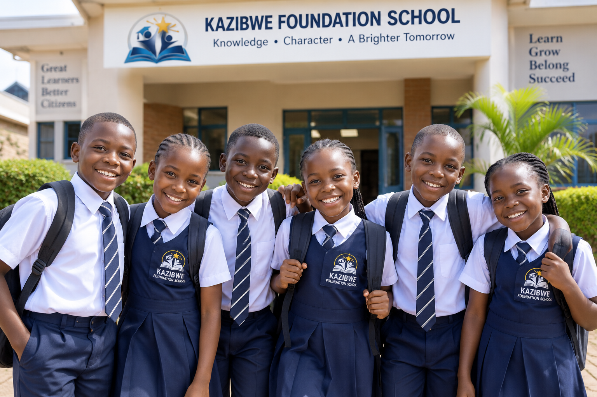
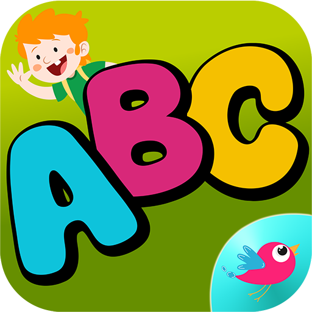
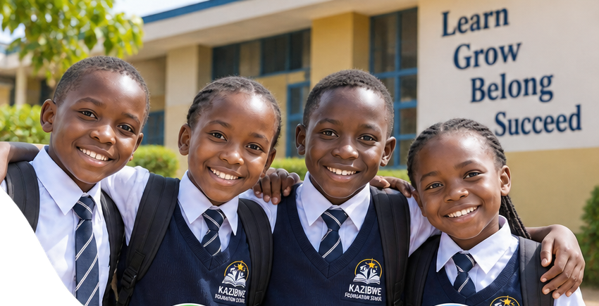

Primary School
Primary One to Primary Seven (P1–P7)

Building a Strong Academic Foundation
Our primary programme focuses on academic learning, character development and essential life skills. We aim to help learners build confidence, develop good learning habits and prepare for their next stage of education.
Learning and Development
Primary education helps learners develop knowledge, practical skills and the ability to understand and respond to the world around them.

Building Knowledge
Developing understanding and strengthening learning skills across school subjects.
Reading and Communication
Encouraging reading, writing, listening and clear communication.

Learning Together
Supporting cooperation, discussion, creativity and problem-solving.
Our Learning Priorities
- Reading, writing and communication
- Mathematics and problem-solving
- Science and understanding the world
- Social studies and responsible citizenship
- Discipline, respect and personal responsibility
- Creativity, teamwork and independent learning
Prepare for the Next Stage
Contact us for information about primary school enrollment.